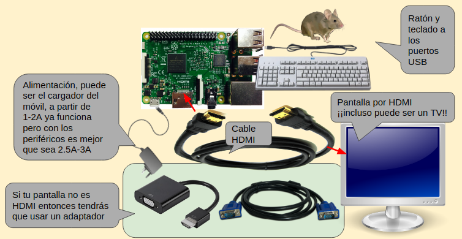
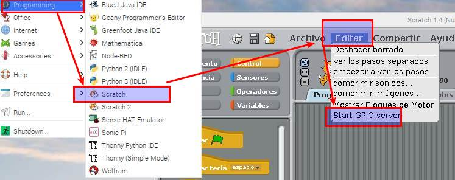

1 CONFIGURAR TU RASBERRY
Necesitas hacer estos pasos:
- INSTALAR EL SISTEMA OPERATIVO RASPBIAN aquí cómo hacerlo y por supuesto saber apagarlo correctamente (aquí).
Los siguientes pasos déjalos para el final, para la práctica final del coche.
- CONECTAR LA RASPBERRY A LA WIFI Y ASIGNARLE UNA IP FIJA aquí cómo hacerlo
- No obligatorio pero útil es el comunicarte vía remótamente de forma textual con SSH (aquí) cambiar usuario y contraseña (aquí)
- CONECTARTE CON LA RASPBERRY de forma remota y gráfica con VNC aquí como hacerlo .
Aclaraciones: ¿Necesito los 3 pasos anteriores para conectarme via remótamente con la Raspberry para la robótica Pibrella?
Podríamos usar la Raspberry con la Pibrella conectado con un teclado, ratón y una pantalla y no necesitamos un ordenador, usamos el mismo ordenador que es la Raspberry!!:

PERO.. que pasaría si ...
Quieres hacer una práctica de la Pibrella donde se mueva por ejemplo el coche. Entonces estás obligado a comunicarte de forma remota.
Para el resto de prácticas NO ES NECESARIO COMUNICARTE DE FORMA REMOTA incluso es más rápido utilizar diréctamente la Raspberry con la Pibrella con pantalla, teclado y ratón.
2 CONFIGURAR SCRATCH para que utilice GPIO
En el Scractch de la RASPBERRY (ojo no de tu PC) tenemos que configurarlo para que interactúe con el GPIO de la Raspberry:
- Hay que entrar en SCRATCH 1.0 (ojo no la 2.0)
- Editar - Start GPIO server

Para pararlo Editar - STOP GPIO Server
3 ¿CON SCRATCH 1.0??? ¿NO SE PUEDE CON SCRATCH 2.0?
Sí que se puede, pero como puedes ver en la siguiente presentación SÓLO AÑADE 2 FUNCIONES PARA LAS GPIO, con eso sí que se puede utilizar Pibrella pero no tiene funciones específicas para Pibrella que sí que tiene Scratch 1.0
Ojo suponemos que te has desgargado el Raspbian gráfico con las opciones recomendadas
Pero si te descargas un Raspbian con entorno gráfico pero "lite" tienes que instalar el paquete nuscratch para que pueda controlar GPIO Scratch
4 ¿Y NO SE PUEDE CON PYTHON?
Pues sí, aquí tienes las librerías que necesitas y ejemplos.